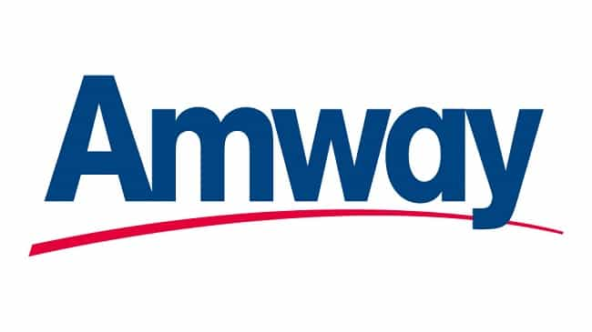

< < < Back
The 5 Best Jobs For Men In College – Return Of Kings
Nowadays, it seems that everyone is recommending internships—either paid, or unpaid. As has already been said here on Return Of Kings, unpaid internships are a huge scam, and you should not accept them.
However, even paid internships often don’t offer you any real life experience, and they end up paying you a “stipend.” What this really means, is that you’ll be copying documents and organizing papers for often less than minimum wage.
For the young men here, I want the best for you. I want you to get college jobs that will not only earn you some decent cash, but that will also teach you about life, women, and happiness… while getting you some pretty nice perks along the way.
I am sharing this wisdom with you, because I want more men like us in power—men who are aware of the liberal machine and its curtain of deceit should be given more financial and social power. And what better way to do that than by starting in college?
1. Caddie
![caddy-carrying-clubs-on-golf-course[1]](wp-content/uploads/2016/04/caddy-carrying-clubs-on-golf-course1.jpg)
One of my mentors, who now owns a tech-startup company in Silicon Valley, said that being a caddie during his college years was one of the best decisions he ever made.
The key, however, is to choose the right club. There’s one right outside of Washington, D.C. known as the Burning Tree Club. This is the one that he worked at. He told me that the initiatory fee was $75,000, and in order to be a member an additional $500 per month fee was required. In other words, you’ll be getting tipped $50 per hour by rich old men who want to help out hard-working young lads such as yourselves. My mentor said that he even pulled $150 per hour on some occasions.
In addition to this, you get to spend time with wealthy, successful politicians and businessmen—just this alone makes being a caddie an invaluable job. Imagine being able to ask them for one piece of advice after every hole they play. You would surely gain countless pearls of wisdom in just a matter of months. And as if that isn’t enough, you’ll be working outside getting a tan. What more could a young boy want?
Caddies operate on a first come, first serve basis, and the bar is extremely low. Just find a wealthy country club near you, show up at 5:30AM, and tell them you want to caddie. For the first week they’ll probably make you follow around an experienced caddie, just so you can learn the ropes.
Once this learning phase is over, however, you can come in and work as often as you want—there’s no schedule and no minimum hours required of you. There’s also no age requirement which is nice; you just have to be strong enough to carry around one or two golf bags.
2. Uber Driver
![8307a92b3cc64f0e8d984593b2d992da_a5c3419f92a9477e979c93ad3f50d777_original[1]](wp-content/uploads/2016/04/8307a92b3cc64f0e8d984593b2d992da_a5c3419f92a9477e979c93ad3f50d777_original1.jpeg)
Although I don’t personally have experience as a caddie, I do have experience as an Uber driver—and let me tell you, if you know what you’re doing, it’s very easy.
There are certain regulations depending on the state, but I got registered within a week and a half. The beauty of this job is that you can pretty much work whenever you want, and if you’re smart, you can net an easy $15-20 per hour after expenses while driving around, listening to audio-books or educational podcasts.
It’s best if you live near a major city (DC, Las Vegas, Boston, etc.) but even in small towns the payout can often be large. Expect to make $25-35 per hour during the morning commute and nighttime commute hours, and up to $100 per hour on busy events (St. Patrick’s Day, New Orleans, the Superbowl, etc.).
The key to doing Uber is to only accept the rides when the surge is 2.0 or above—anything less than that and it isn’t worth it in my opinion. Also be sure to learn the local hot spots in your area. For DC it’s Dupont Circle, Foggy Bottom, and Capitol Hill. The best times to drive, like I said before, are either 5-10AM on weekdays or 4-11PM Monday through Saturday.
3. Club Promoter
![club-promoters-dressed[1]](wp-content/uploads/2016/04/club-promoters-dressed1.jpg)
Being a club promoter is by far the best job that you can have if you’re trying to get laid and develop some really good social skills.
In a nutshell, the way that this job works, is that you get paid a flat rate (usually, but not always) like $10 per hour. It’s your job to get as many people to come to a specific night club as possible—so you’ll also get a commission per ticket that you sell. The job consists of putting up flyers, contacting local celebrities, repping the event on Instagram, Facebook, etc.
This can easily add up to $1,000 a week if you put in the work, but the real benefits come from the connections you’ll make. When you’re repping a certain event, you never know who you’ll shake hands with. It could be an up and coming musician who invites you to an amazing after party, it could be the local coke dealer, or it could be a girl who’s willing to suck your dick in the bathroom if you give her and her friends VIP access.
Either way, this job is a win-win—not only does it pay pretty handsomely, but you’ll also score girls left and right.
Unfortunately, this only works if you live in a city that has a vibrant nightlife, but if you can get this opportunity I would highly recommend it. The bar is pretty low, although some experience in sales helps. I recommend meeting one on one with the club manager and handing him your resume personally.
Jobs that are based off of social skills and networking tend to only hire once they actually meet you – they care a lot less about your resume than they do your appearance and social skills. Be sure to dress well and make a good impression if you want to get this job.
4. Lifeguard
Although it isn’t very high paying, the perks are incredible. You get paid to sit outside in the nice weather, get a tan, and chat with sexy girls in bikinis all day. Seriously, what could be better?
All you have to do in order to get a job as a lifeguard is get certified in CPR (I did this in one night, it took me 4 hours) and be able to swim 200 meters or something like that (it changes depending on where you apply).
Regardless, it’s ridiculously easy to get a job being a lifeguard, and I guarantee if you work out you’ll meet tons of girls who want to fuck you so that they can brag to their friends about how they “slept with that cute lifeguard.”
5. Supplement Store Salesman
I actually had a job at a place called Max Muscle. which sells some extremely high quality supplements. This was good for several reasons. First off, I got a massive discount on supplements. In addition to this, I got to spend time with the amateur bodybuilders that worked there. They would always give me tips on specific exercises to do, the best meal plans, and other things.
But, perhaps the biggest benefit I got was developing relationships with the sexy fitness model chicks that would come in on a regular basis. Because I was in a position of authority (the guy recommending and selling them stuff), they were pretty attracted to me. I actually had quite a few girls invite me out to go get drinks.
I also learned the ins and outs of the supplement industry—what’s bullshit, what works, and what doesn’t. I learned what ingredients make a pre-workout effective, why you should buy cold processed whey protein powder, and how literally 95% of “natural” fitness models are actually on steroids.
In short, it was a great job. I also got paid a 5% commission (most supplement stores do the same), and seeing that you can often sell $200 worth of product every hour, this adds up to roughly $27 per hour including minimum wage.
Not bad for a job where you get to hang out with bodybuilder bros, flirt with sexy fitness chicks, and learn about the most effective supplements.
BONUS: Scams to Avoid
There’s a lot of scams out there, especially when it comes to college students. Unfortunately, a lot of fucking losers try to make their money by pushing false hope and promises onto college students desperate for money. Here are three scams to avoid:
1. Amway

I had a brief stint in Amway, because my boss at the time pressured me to go to a meeting. Afraid I would lose my job if I didn’t, I caved.
However, I quit as soon as I found a different job—Amway is a cult filled with weirdos who think that they’re going to make a million dollars a day in passive income by recommending shit quality overpriced products. Do not fall for the hype or listen to the people who claim that they’re making money with this—it’s a scam, plain and simple.
2. Vector

Vector is the distribution network of Cutco (a company that manufactures knives). I actually made $100 per hour in commission with them, but even with this huge wage I do not recommend it. All of the money is commissions based, so if you aren’t a good salesman you won’t make a dime (after you factor in gas money).
Their environment is extremely condescending and their corporate culture is based off of lies and false promises. My boss was extremely manipulative, and upon talking with other people who worked for Vector they said the same about their bosses. They also pay you to give them your phone contacts so that they can pester your friends with promises of “make $20 per hour or more!”
The reality is that 99% of people who worked with me didn’t make shit. The only reason I made $100 per hour was because I’m naturally a great salesman, but even then I walked away from it, because the company was highly unethical and took advantage of young, desperate college kids.
3. Anything Where You Make More Money By Recruiting
Generally speaking, even if they aren’t technically pyramid schemes, if you make more money by recruiting people than you do by actually working, it’s a pyramid scheme.
Avoid working for companies like Herbalife, ACN, Mary Kay, or Shaklee. You can make money with these companies, yes, but only if you spent over a decade hustling your ass off 80 hours a week duping friends and family into selling products for you.
Also any flyers you see offering “$12 per hour for college students!” or “$15 per hour per base appointment!” is almost indefinitely a scam. They make you spend hours cold calling people setting up appointments to sell their garbage, telling you even if you don’t sell anything you’re guaranteed $15 per appointment. In reality, this works out to being like $3 per hour once you factor in gas, driving time, and calling time.
Stay safe, get good jobs, and become financially empowered, so that when the US economy starts to crumble we will be the ones with the power to rebuild it.
Read More: Why Becoming An Adventure Guide Is One Of The Best Jobs A Man Could Have